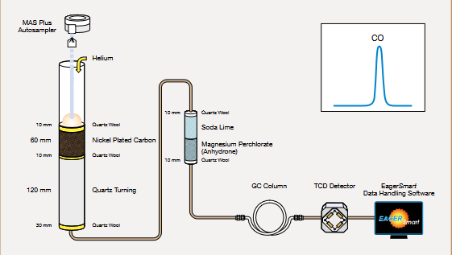
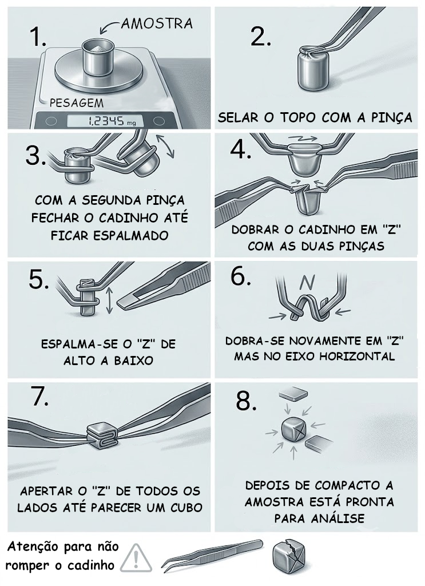

Análise Oxigénio Elementar

| Análise Oxigénio Elementar | |
|---|---|
| Método: | Análise Elementar |
| Equipamento: | Analizador Elemental Flashsmart |
| Técnico: | Rodrigo Borges |
| Tempo Médio: | 1 hora + 10 mins por corrida |
| Quantidade de Amostra: | 2 - 3 mg por replicado |
A análise elementar de oxigénio (O) permite a determinação quantitativa do teor de oxigénio presente numa amostra, constituindo uma ferramenta complementar à análise elementar de Carbono, Hidrogénio, Azoto e Enxofre (CHNS). A determinação baseia-se na conversão do oxigénio presente na amostra em espécies gasosas adequadas, seguida da sua separação e quantificação por métodos instrumentais, permitindo obter resultados com elevada precisão, exatidão e reprodutibilidade.
A determinação do teor de oxigénio é particularmente relevante na caracterização de materiais orgânicos e diversas matrizes ambientais, incluindo biomassa, microalgas, plantas, solos, sedimentos, alimentos, polímeros, combustíveis e materiais de origem biológica. A informação obtida permite complementar a composição elementar da amostra, calcular razões elementares e avaliar parâmetros associados à sua composição e qualidade.
A análise de oxigénio pode ainda ser utilizada no estudo da composição e transformação de matéria orgânica, na caracterização de biomassa e biocombustíveis, na avaliação do grau de oxidação de materiais e no apoio a estudos de valorização de resíduos e processos de conversão de biomassa. Quando combinada com os resultados de CHNS, permite obter um perfil elementar mais completo da amostra e fornecer informação relevante para estudos de caracterização química, ambiental e biotecnológica.
Preparação da Amostra
Para a preparação de amostra, o utilizador deverá contactar o técnico Rodrigo Borges para solicitar o número adequado de cápsulas de prata.
Amostras Sólidas
As amostras sólidas devem ser previamente secas e moídas, de forma a garantir a sua homogeneidade. Para cada cápsula de prata, deverão ser pesados entre 2 e 3 mg de amostra. A pesagem deve ser realizada com o máximo cuidado, uma vez que a reduzida massa da amostra torna a determinação exata do peso fundamental para o cálculo correto da composição elementar.
Importante: Deve ter-se especial atenção ao volume da amostra introduzida na cápsula, uma vez que um excesso de material pode provocar a sua rutura durante o fecho.
Amostras Líquidas
Quando se pretender analisar amostras líquidas com baixas concentrações de elementos, estas deverão ser previamente concentradas, registando o fator de concentração utilizado. A presença de água não interfere com a análise, uma vez que, após a combustão, a humidade produzida é removida por uma coluna de soda lime e perclorato de magnésio anidro.
Deverão ser pesados entre 2 e 3 mg da amostra líquida para o interior da cápsula de prata, utilizando uma micropipeta. Esta operação pode ser facilmente realizada com uma micropipeta de 20 µL, dispensando, por exemplo, cerca de 2.5 µL de amostra e registando rigorosamente a massa obtida.
Preparação do Cadinho
Após a pesagem da amostra, a cápsula de prata deverá ser cuidadosamente fechada conforme ilustrado na imagem abaixo:

Na primeira requisição desta análise, o técnico Rodrigo Borges realizará uma demonstração presencial da preparação correta da amostra. Serão igualmente disponibilizadas cápsulas de prata adicionais para treino, uma vez que o correto acondicionamento das amostras é uma etapa que requer alguma prática e destreza.
Específicações da Análise:
| Método: | Pirólise de elevada temperatura |
| Elemento Determinado: | Oxigénio |
| Gás de Arraste: | Hélio |
| Detetor: | Detetor de Condutividade Térmica (TCD) |
| Número de Replicados Recomendado: | 3 |
| Tempo médio por corrida: | 10 minutos |
Limites de Deteção / Quantificação:
| Elemento | LOD | LOQ |
|---|---|---|
| Oxigénio | - | - |
Resultados Fornecidos
- % Oxigénio
- Média e desvio padrão
- Comatograma (se solicitado)
Tipos de Amostra
- Amostras Sólidas;
- Amostras Líquidas;
- Compostos altamente voláteis;
- Materiais explosivos;
- Amostras corrosivas;
- Amostras radioativas;